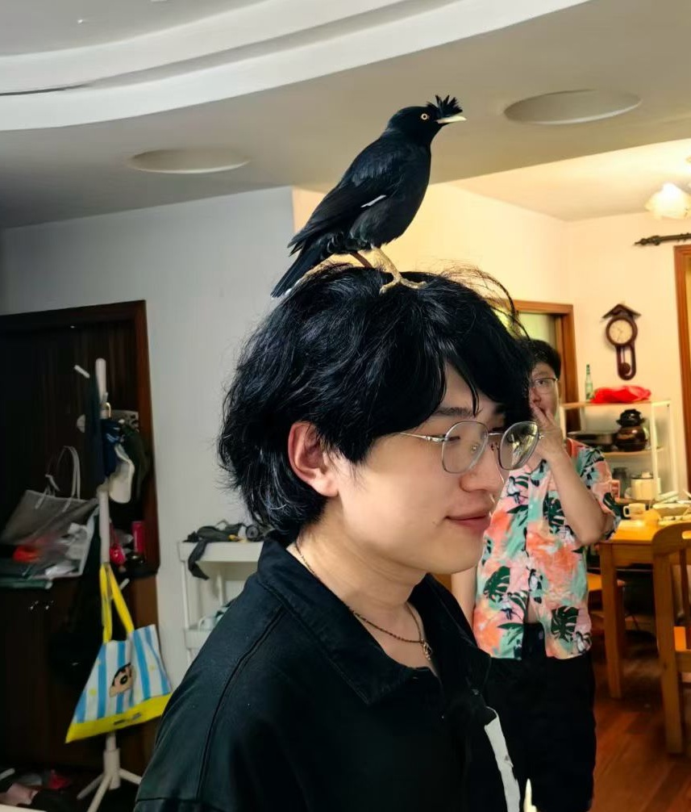

🧠
Interpretable ML
I am interested in methods that explain why neural networks make decisions, from attribution methods to hidden-unit diagnostics.
ConductanceAttributionXAI
Hi, I’m Zikai Zhao — an engineering student exploring interpretable machine learning, Kolmogorov-Arnold Networks, scientific ML, and learning-based dynamics modeling for robotics.

Interpretable ML · Kolmogorov-Arnold Networks · Robotics Dynamics
I like systems that are not only powerful, but also understandable. My current interests sit between machine learning theory, engineering intuition, and robotic dynamics.
I am interested in methods that explain why neural networks make decisions, from attribution methods to hidden-unit diagnostics.
I explore Kolmogorov-Arnold Networks as a way to represent learnable functions with more visible internal structure.
I am also curious about quadrotor dynamics, hybrid physical/data-driven models, and control-oriented simulation.
My favorite questions are the ones where math, code, and physical intuition all collide.
These are representative directions. Replace descriptions and links as your work becomes more polished.
Making internal functions easier to inspect.
Exploring how KAN structures can be diagnosed through learned spline functions, symbolic replacement, edge importance, and attribution-style analysis.
Combining first principles with learned residuals.
Studying data-driven and hybrid approaches for modeling drone dynamics, aerodynamic effects, disturbance estimation, and simulation-based evaluation.
Hardware-level graphics and interaction.
A two-player FPGA game involving HDMI rendering, keyboard input, sprite logic, collision, bullets, walls, and real-time game-state control.
Learning by rebuilding ideas from first principles.
Notes and small experiments on PINNs, DeepONets, weak forms, finite element ideas, attribution methods, and interpretable modeling.
A compact academic timeline. You can edit this into your real school/program details later.
Building foundations in circuits, systems, machine learning, signal processing, and control.
Reading papers on attribution, neuron importance, KAN, and diagnostic methods for neural networks.
Connecting machine learning with physical systems, especially quadrotor dynamics and simulation.
“I want models that do not just predict — I want models that can show their reasoning structure.”
Current research vibe ✦Replace these placeholders with your real links before publishing.